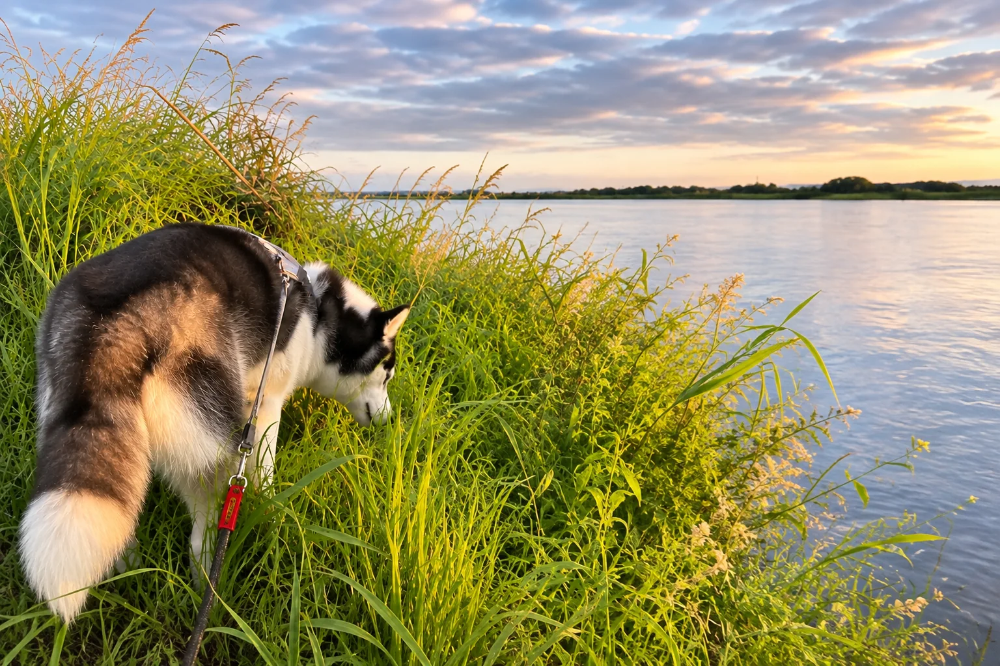
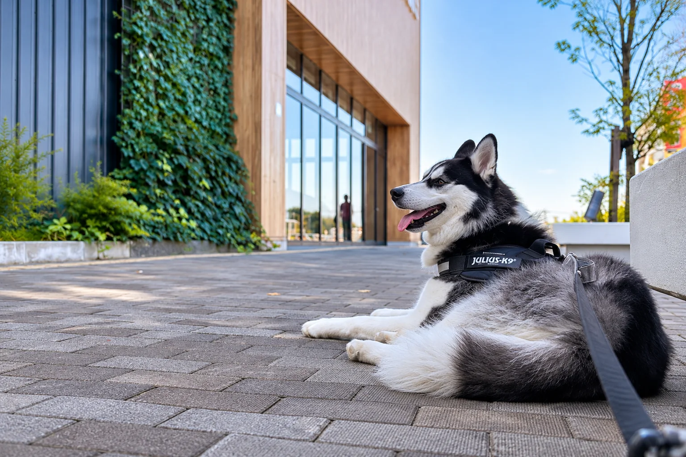
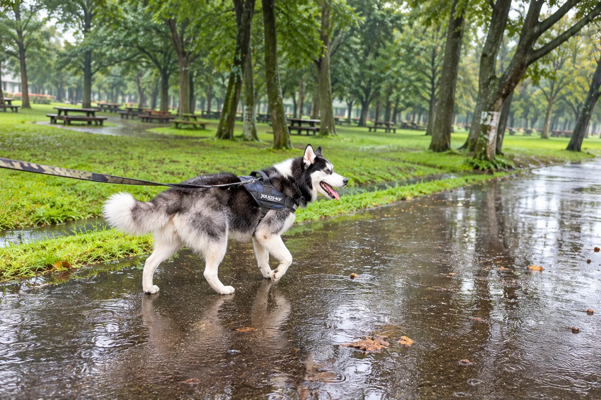
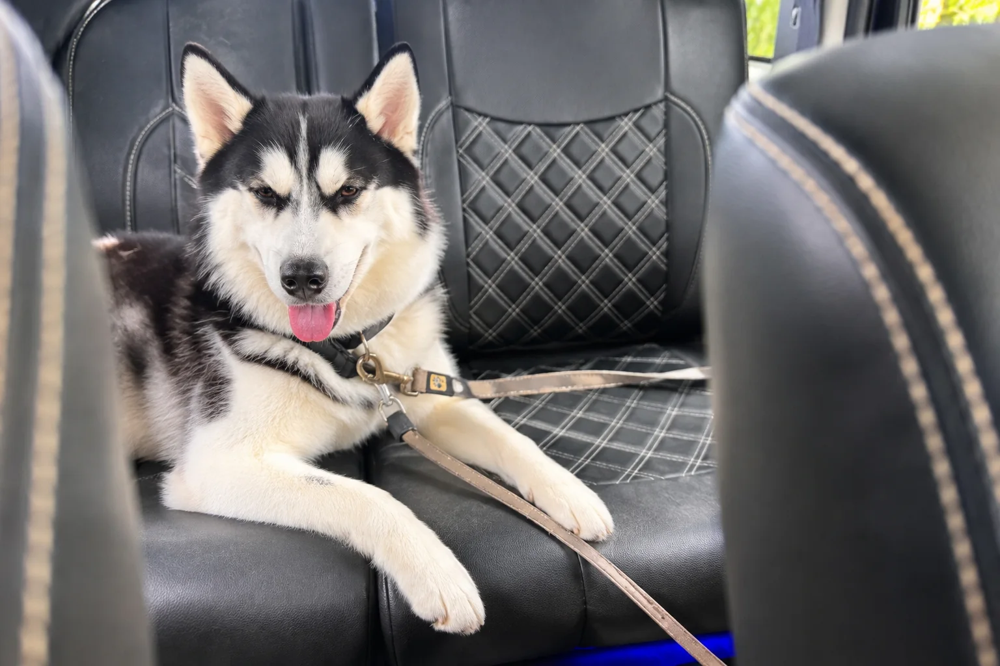

大型犬の散歩は大変？ハスキーと暮らして見つけた6つの楽しみ方
「大型犬を飼ってみたいけど、毎日の散歩が大変そう……」
「犬はかわいいけど、毎日何時間も歩く自信がない」
実は、私も大型犬を迎える前は、お散歩に対してすごく不安を感じていました。
だからこそ、少しでも楽しくお散歩ができるように、いろいろな工夫をしてきました。今では、毎日のお散歩が私自身の楽しみにもなっています。
大型犬との暮らしには、散歩や運動の時間をしっかり確保する必要があるって言いますよね？
でも、大型犬だから必ず長時間歩き続けなければならない、というわけではないんです。
犬にもそれぞれ個性があって、お散歩が大好きな子もいれば、あまり好きではない子もいます。
今回は、我が家のシベリアンハスキーとの暮らしで見つけた、愛犬も飼い主もお散歩が楽しくなる6つの工夫をご紹介します。
大型犬の散歩時間はどのくらい？犬によって違う必要な運動量
大型犬のお散歩は、1日にどのくらい必要なのでしょうか？
犬の散歩時間や必要な運動量は、犬種や体格だけでなく、年齢、健康状態、性格などによっても変わります。
大型犬だからといって、すべての子が同じ時間のお散歩を必要とするわけではありません。
ただし、短いお散歩で満足しているように見えても、必要な運動量が足りているとは限らないので、その子に合った運動量を考えてあげることが大切です。
我が家では、シベリアンハスキー（1歳半）の女の子と暮らしています。
この子は毎日2時間以上のお散歩が必要なタイプ。
以前は最低2時間、長いときには6時間ほど歩いたり走ったりしていました。
でも今は、匂いを嗅いだり、景色を眺めながら休憩したり、のんびり過ごしたりする時間も取り入れています。
お散歩に費やす時間は変えていません。変えたのは、その時間の過ごし方です。
そんな愛犬との暮らしで気づいたのは、お散歩は、ただ歩いたり走ったりするだけの時間じゃないということでした。
1. 散歩コースや公園を変えてみる

毎日同じ道を歩いていると、たまに飽きて、どこか寄り道したいことってありませんか？
我が家では車で少し移動して、普段とは違う場所を散歩しています。
公園だけでなく、土手、人通りの少ない路地、広い散歩道などもお気に入りのお散歩コースです。
場所だけでなく、人が少ない時間帯を選ぶことも工夫のひとつ。
ただし、草が多い場所ではノミ・マダニへの対策も忘れずに。予防薬について動物病院に相談したり、お散歩後に体をチェックしたりすることも大切です。
野生動物がいる可能性や、その場所の利用ルールにも気をつけてください。
新しい景色や匂いに出会う時間は、愛犬だけでなく、飼い主の私にとってもちょっとした気分転換になっています。
2. 匂い嗅ぎの時間をたっぷりつくる
犬のお散歩というと、たくさん歩いたり、思いっきり走らせたりするイメージがありませんか？
もちろん、体を動かすことも大切です。
でも、我が家のシベリアンハスキーを見ていると、たくさん走った日よりも、じっくり匂いを嗅いだ日の方が満足しているように感じることがあります。
草の匂いや、風に乗ってくる匂い。ほかの犬が通った場所の匂い。
犬は鼻を使って、私たちにはわからない周囲の情報を読み取っているそうです。
だから、何かの匂いを夢中で嗅いでいるときは、できるだけ急かさずに待つようにしています。
もちろん、危険なものを口にしないように注意を怠ってはいけません。
たくさん歩くことだけにこだわらず、愛犬が匂いを楽しむ時間もしっかりつくる。
これも、我が家で大切にしているお散歩の工夫です。
3. 安全な場所で自由に動ける時間をつくる
我が家のシベリアンハスキーは、走り回ることも大好きです。
でも、大型犬と同じペースで飼い主が走り続けるなんて、絶対無理な領域ですよね（笑）。
そこで活用しているのが、ロングリードです。
周囲の安全を確認できて、使用が認められている広い場所では、ロングリードを使って自由に動ける時間をつくっています。
これなら、私がずっと一緒に走らなくても、愛犬は自分のペースで動き回れます。
ただし、ロングリードは急に引っ張られたり、人やほかの犬に絡まったりする危険もあります。
人が少ない場所でも、突然誰かが来たり、猫や鳥が飛び出してきて、愛犬が急に追いかけようとしたりする可能性もあるので、周囲の確認とリードの管理は欠かせません。
そして、もうひとつ気をつけたいのが、ロングリードによる摩擦のケガです。
勢いよく引っ張られたとき、素手でリードを持っていると、摩擦でやけどのようなケガをしてしまうことがあります。
実は私も、リードが足首に絡まって、輪っか状の痛々しい跡ができてしまった経験があります。
そのため、ロングリードを使うときは、摩擦に強い手袋や、足首まで覆える長ズボン、足元を保護できる靴などを着用するのがおすすめです。
ただし、手袋や長ズボンだけで事故を防げるわけではありません。
リードを手や体に巻きつけず、犬の力を制御できる範囲で使用することが大切です。走っている犬を力任せに止めようとするのも危険なので、周囲との距離やリードの長さにも十分注意してください。
愛犬が自由に楽しめる時間だからこそ、飼い主もしっかり安全対策をしておきたいですね。
4. リードの使い分けでお散歩にメリハリをつける
我が家では、リードの長さによって、お散歩の過ごし方を変えています。
大型犬を飼い始めて感じたのは、リードの長さによって、愛犬自身もその時間の過ごし方を察してくれるということ。
短いリードのときは、私と一緒に歩く時間。
ロングリードを使える場所では、行きたい方向を選んだり、好きな場所の匂いを嗅いだりする時間。
そんなふうにメリハリをつけています。
もちろん、最初から何でも理解してくれるわけではありませんが、毎日の散歩の中で、少しずつ過ごし方を覚えてくれたように感じます。
こういうところは、賢い大型犬にちょっと甘えています（笑）。
いつでも自由に動けるわけではありませんが、安全に過ごせる場所では、なるべく愛犬自身が選べる時間をつくるようにしています。
5. あえて何もしない休憩時間をつくる

たっぷり遊んだはずなのに、帰ろうとすると伏せて動かなくなる。
あの「まだ帰りたくない！」ムーブをするときがあるんですよね（笑）。
我が家のシベリアンハスキーも、車に戻ろうとすると、そんなことがよくあります。
普段の様子から「まだ帰りたくないのかな？」と感じたときは、無理に帰ろうとせず、30分〜1時間ほどのんびり休憩する時間を取っています。
その間、愛犬は周りの景色を眺めたり、風に乗ってくる匂いを嗅いだり。
ただ外でのんびり過ごしているだけなのに、とても心地よさそうにしています。
そんな姿を見ているうちに、お散歩って、ずっと歩き続けなくてもいいときもあるんだなと悟りました。
もちろん、伏せて動かなくなる理由は、疲れや暑さ、体調不良などの場合もあります。
私は少し距離を置いて、愛犬がゆっくり過ごす様子を見守ることもあれば、そばに行って撫でながら、体調や暑さによる負担がないか確認することもあります。
こうしたチェックは欠かさず行っています。
気温や天候に問題がなく、安全に過ごせる場所なら、あえて何もしない時間をつくってみるのも、私の中ではとてもおすすめです。
6. 飼い主にもご褒美の時間をつくる

犬のお散歩は毎日のこと。
雨の日も風の日も、暑くても寒くても、毎日お散歩に行きたがりますよね。
だからこそ、飼い主にとっても楽しみな時間にしたかったんです。
私がよくしているのは、休憩用に温かいコーヒーを準備すること。
愛犬にはちょっとしたおやつを用意して、私はコーヒーを飲みながらひと休み。
愛犬が外の空気を楽しんでいる間、私も景色を眺めながらのんびり過ごしています。
犬のために出かけたお散歩が、私にとっても大切なリラックスタイムになっています。
「今日もお散歩に行かなきゃ」ではなく、「今日はどこでコーヒーを飲もうかな？」
そんな小さな楽しみをつくるのも、毎日のお散歩が楽しくなった工夫のひとつです。
愛犬が満足しているかは、お散歩後の様子もヒントに

では、どのくらいお散歩をすれば、犬は満足すると思いますか？
これは犬種や体格だけでなく、年齢、健康状態、性格によっても違います。
我が家では、お散歩後の行動も判断材料のひとつにしています。
まだ遊び足りなさそうな日は、車で移動している間も外の匂いを盛んに嗅いで、ワクワクしている様子。
反対に、満足していそうな日は、車の座席で落ち着いて待っていたり、ときには眠ってしまったりします。
帰宅後も、まだ遊びたがる日と、ゆっくり休んでいる日では様子が全然違います。
もちろん、眠っているから必ず満足しているとは限りません。
でも、毎日一緒に過ごしていると、その子なりの変化が少しずつ見えてくるんですよね。
お散歩の距離や時間だけで判断せず、愛犬の普段の様子をよく観察することも大切にしています。
まとめ｜愛犬にも飼い主にも心地よいお散歩を
大型犬だからといって、すべての子が同じ散歩時間や運動量を必要とするわけではありません。
我が家のシベリアンハスキーのように長時間のお散歩が好きな子もいれば、短いお散歩を好む子もいます。
もちろん、その子に必要な運動量は、年齢や健康状態なども考えてあげる必要があります。
そして、私自身が変えたのは、散歩の時間ではなく、その過ごし方でした。
以前は、長い時間歩いたり走ったりすることを中心に考えていました。
今は、匂いを嗅ぐ時間や、景色を眺めながら休む時間も大切にしています。
運動が必要なくなったわけでも、お散歩の時間を短くしたわけでもありません。愛犬に合った楽しみ方を増やしたんです。
新しい場所へ出かけたり、匂いを嗅いだり、景色を眺めながら休憩したり。
飼い主もお気に入りの飲み物を用意して、愛犬と一緒にのんびり過ごしてみる。
そんな時間も、犬との暮らしの楽しみのひとつだと思っています。
大切なのは、愛犬の個性を知って、お互いに心地よいお散歩の形を見つけること。
毎日のお散歩が、愛犬にとっても飼い主にとっても、お互いにコミュニケーションを取りながら楽しめる、待ちわびてしまうような時間になったらうれしいです。
画像について：掲載画像は提供された実際の散歩写真をもとにAIで再生成したイメージです。記事は飼い主個人の体験を紹介するもので、運動量や体調管理については犬ごとの状態に合わせて判断してください。